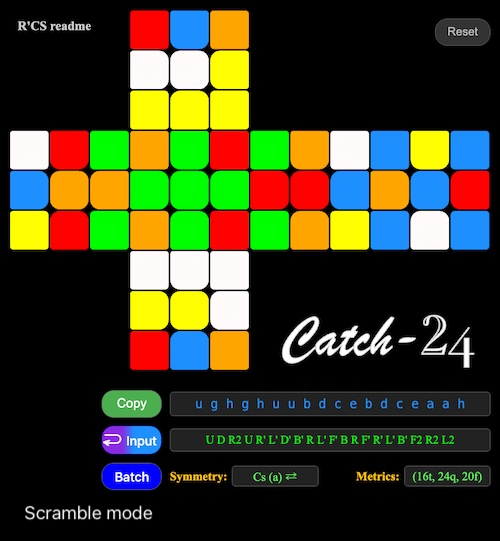
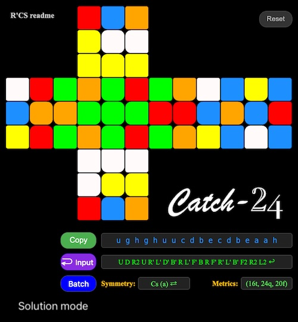
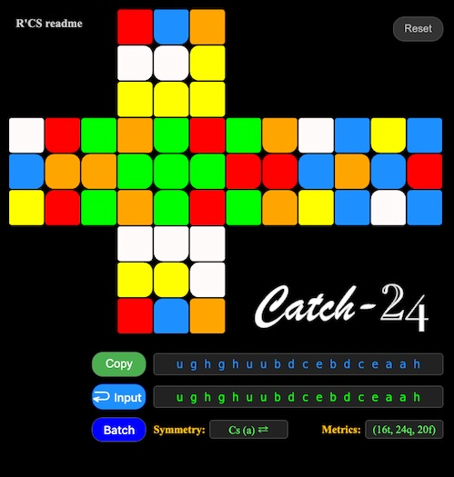
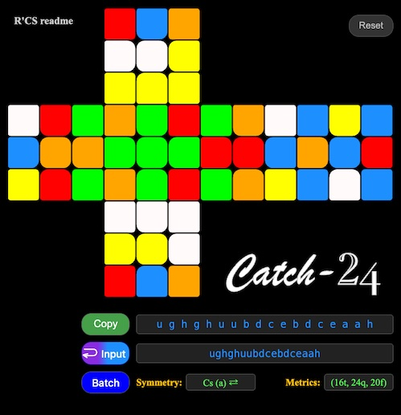
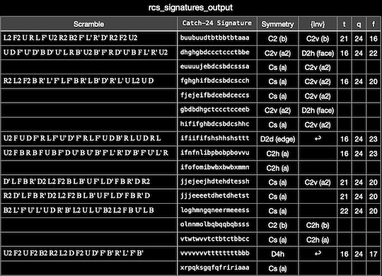

"Rubik's Cube Signature" (R'CS)
Introduction
- This program (hereinafter referred to as R'CS) is designed for entering the state (scramble, net layout) of a 3x3x3 Rubik's Cube and defining its unique code, regardless of the number of moves leading to that state.
- It uses a "smart" input method that helps the user correctly fill in the sticker colors, reducing the input by an average of 1/3 of the total number of colors entered.
- R'CS takes into account the conventions necessary for encoding a position in Catch-24 code and generates it if the position is legitimate.
Terms and Notations Used
Cube Faces:
Standard face notations:
U- UpL- LeftF- FrontR- RightB- BackD- Down
Face Colors (Center Sticker Colors):
- The center colors are constant and define the color of the entire face in the solved state:
U:snow(white)L:orangeF:lime(green)R:redB:dodgerblue(blue)D:yellow
Face Properties:
- The position of each face on the net relative to other faces is rigidly defined by the cube's mechanics.
- The face pairs
U-D,F-B,L-Rare mutually opposite. - Each face is adjacent to 4 other faces that are not opposite to it.
Centers and Stickers:
- On the cube net used, there are six centers that do not change their color and 48 stickers, numbered from
0to47(seeimage 1), whose colors can be painted by the user.

Cube Slots (Elements):
- Corner Slots: There are 8 in total. Each has 3 stickers. In the program, they are denoted by the prefix
<c>(fromc0toc7). - Edge Slots: There are 12 in total. Each has 2 stickers. In the program, they are denoted by the prefix
<e>(frome0toe11). - Visual Representation: The numbering of corner and edge slots is shown in
image 2.

Orientation Markers and Reference Stickers:
- Orientation markers
§, which define the reference stickers of the slots, are used for encoding positions in Catch-24 code. - For Corners: The orientation is 0 if the reference stickers of the slots located on the
U/Dfaces match the U or D face (seeimage 2). - For Edges:
- For a slot located in the horizontal U/D layers (e0-e7), the orientation is 0 if its reference stickers match the U or D face.
- For a slot located in the equatorial F/B layer (e8-11), the orientation is 0 if its reference stickers match the F or B face.
Sequence and Algorithm for Filling the Net (Scramble)
- Input Sequence: Filling the stickers with colors occurs sequentially, from
0to47. Corner slot sticker numbers are even, edge slot numbers are odd. - Dynamic 6-Color Palette: The availability of colors on the palette for the current sticker is determined by the "smart" input rules, defined by the mechanics of the Rubik's Cube.
- Color Input: R'CS moves the cursor over the stickers, skipping those already colored based on the rules. The user can also click to select any sticker with a number lower than the active (current) one, which guarantees the erasure of that sticker's color and the colors of other stickers with higher numbers. The user then selects an available color from the 6-color palette, and the full logic is restored. R'CS has a restriction on erasing stickers in a fully solved position for sticker numbers no greater than 15.
- Backspace Button ⌫ : Moves the cursor back one sticker and guarantees the erasure of its color and the colors of other stickers with higher numbers. The user can then continue to erase one sticker at a time or select an available color from the palette, and the full logic is restored.
"Smart" Input and Encoding Rules
- These rules restrict and/or automatically fill in sticker colors during input.
- Important: The program's logic distinguishes between the physical slots of the cube (8 corners, 12 edges, which do not move) and the definitions/assignments of these slots, which describe their colors in the solved state of the cube. "Smart input" analyzes the current colors on the stickers of a physical slot to determine which definition it corresponds to.
General Principles:
- Exclusion of Opposite Colors: Stickers of the same slot cannot have colors of opposite faces.
- Each corner slot belongs to three faces (defined by three centers).
- Each edge slot belongs to two faces (defined by two centers).
- The same color belongs to four corner slots and four edge slots.
- Parity of Position: The parity of permutations must be even - the sum of the parities of the corner and edge slots must be even.
Rule for Faces:
- If any 2 non-opposite faces are completely colored with their center colors, the other 4 faces are automatically completed to the solved state of the cube.
Rules for Corner Slots:
- Calculating the Third Color: If two of the three colors for a corner slot are entered, R'CS automatically determines the missing third color (see
image 3: auto-detection of sticker 16 of corner slot c1). - Sum of Orientations: The sum of the orientations of all corner slots modulo 3 must be equal to 0. Taking this into account, when encoding in Catch-24, one symbol (the first, for corner slot c0) is not included in the Catch-24 code.

Rules for Edge Slots:
- Calculating the Second Color: If one of the two colors for an edge slot is entered, R'CS checks for the same color among the already completely colored ("solved") edge slots. If three solved slots with that color are found, R'CS determines the second color for the incomplete slot.
- Sum of Orientations: The sum of the orientations of all edge slots modulo 2 must be equal to 0. Taking this into account, when encoding in Catch-24, one symbol (the last, for edge slot e11) is not included in the Catch-24 code.
Catch-24 Code:
image 4. The orientation of the cube slot is written after the hyphen).image 4), acting as a progress bar until the entire cube is colored. Unassigned slot definition symbols are replaced with hyphens.image 5) by the value inverse to the initial position. The result of this multiplication is the Catch-24 code.image 5): a • x = x, m • f = e, f • i = a. Multiplication is generally not commutative (the result depends on the order of the factors).Additional Input Modes
Supported Notation for the Input String
- Standard WCA: Uppercase letters F, B, R, L, U, D with modifiers ' (counter-clockwise), 2 (double move), and wide moves, e.g., Fw, Rw', Uw2.
- For backward compatibility with some scramble tables, non-standard modifiers such as
1,3,+, and-are also supported, e.g.,F3orF-(asF'),U1orU+(asU) - Rotations of the entire cube (x, y, z) are not supported - for R'CS, the starting WCA net is unchangeable.
Input Modes: Scramble and Solution
- These modes allow entering standard move sequences into the input string and processing them as a Scramble (forward sequence) or as a Solution (inverse sequence).


- This provides the ability not only to get the Scramble position but also the position in Solution mode from which a known algorithm begins.
- A single "Input" button with two active zones is used to control the modes:
- The light blue, main, and right part of the button with the text "Input": Scramble & Catch-24 modes. (In Scramble and Solution modes, the sequence of moves is executed starting from the initial (solved) state of the cube.)
- The purple zone on the left, with the turn-around icon ↩ : (Solution Mode). In Solution mode, the inverse sequence in the input string will be the solution to the position obtained after pressing the ↩ icon on the left part of the Input button.
- Upon successful execution (in both modes), the text in the input field will turn bright green (lime).
- If the entered string was processed in Solution mode, the "Input" button will turn fully purple, a ↩ symbol will appear at the end of the string in the input field, and the corresponding values will be displayed in the Symmetry: & Metrics: (Metrics - when a move sequence is entered) indicators. The purple color of the button will remain until the next action (Input, Reset, or Copy mode).
Catch-24 Code Input Mode
- When an 18-character Catch-24 code is entered directly into the input field (to the right of the dual-zone ↩ / Input button), pressing any part of this button performs the reverse operation of decoding the Catch-24 code into the cube's sticker colors.
- On success, the text in the input field turns bright green (lime), and the Input button becomes fully light blue.

- Once the full 18-character Catch-24 code is formed in the output field (to the right of the Copy button), as well as when the user finishes coloring the net manually, it becomes possible to copy the Catch-24 code to the clipboard using the Copy button.
- Simultaneously with pressing the Copy button, the Catch-24 code is placed into the input field to the right of the Input button, confirming the copy.
- If the position does not correspond to the mechanics of the Rubik's Cube, a corresponding warning is issued.

Symmetry Analyzer, Metrics, and Batch Processing
The third control row contains tools for crystallographic classification, move sequence metrics, and batch processing of datasets:
Schoenflies Symmetry & Reversibility (Symmetry:)
- Automatically classifies any legitimate cube state into one of the 31 achievable Schoenflies point symmetry groups (according to Herbert Kociemba's classification, from the asymmetric group
C1to the full octahedral groupOh). - Displays an additional indicator when the inverse sequence generates the same or anti-symmetric state:
↩— Direct Involution: the inverse sequence generates the exact same fixed-center position (S(P) = S(P−1), i.e.,P = P−1).{Group}(e.g.,S4 {C4h}) — Antisymmetry Supergroup: whenP ≠ P−1and a non-empty setA = {g ∈ Oh | g · P · g−1 = P−1}exists, displays the doubled-order Schoenflies supergroupH̃ = H ∪ Ain Kociemba's notation (see Mathematical Appendix).
Move Sequence Metrics (Metrics:)
- When a move sequence is entered, the right indicator displays its length in three metrics formatted as
(xxt, xxq, xxf):t— TRM (Turn Robot Metric): quarter-turns where simultaneous moves on the same axis (e.g.,R L,U D') count as 1 unit, and double turns (R2,R L2) count as 2 units.q— QTM (Quarter-Turn Metric): total number of 90° face turns (double moves count as 2).f— HTM (Half-Turn Metric / Face-Turn Metric): total number of face moves (90° or 180° moves each count as 1).
- Pressing the Reset button clears both the
Symmetry:andMetrics:indicators.
Batch Mode (Batch)
- Clicking the Batch button allows loading a text or tab-separated file (
.txt,.tsv,.csv) containing a list of move sequences or 18-character Catch-24 signatures. - R'CS automatically normalizes move sequences, deduplicates identical signatures and generates a downloadable
rcs_signatures_output.tsvreport with 7 columns:
Scramble,Catch-24 Signature,Symmetry,Inv,t,q,f.

The R'CS program and the Catch-24 code are unlicensed: